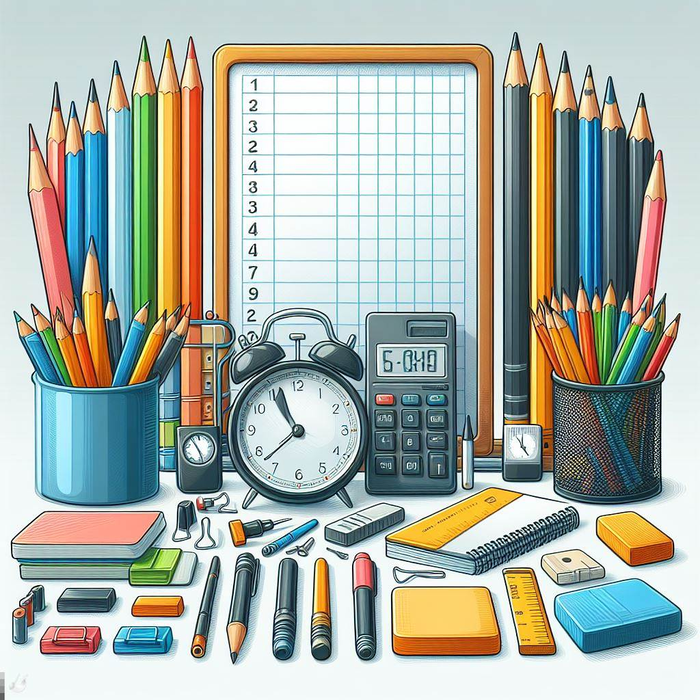
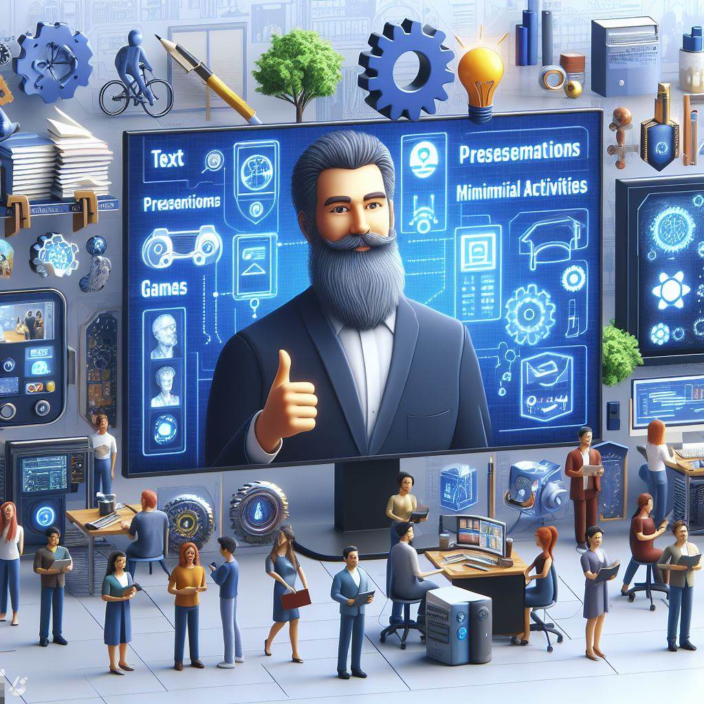
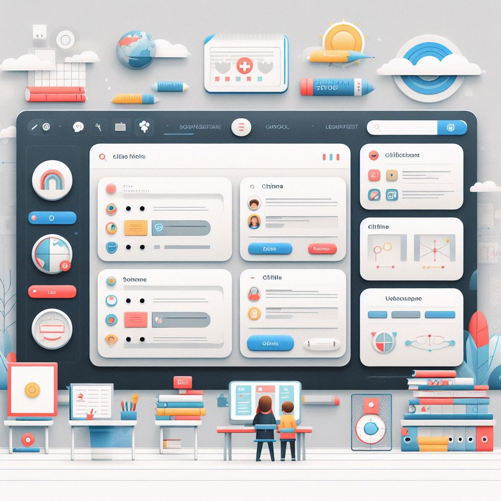
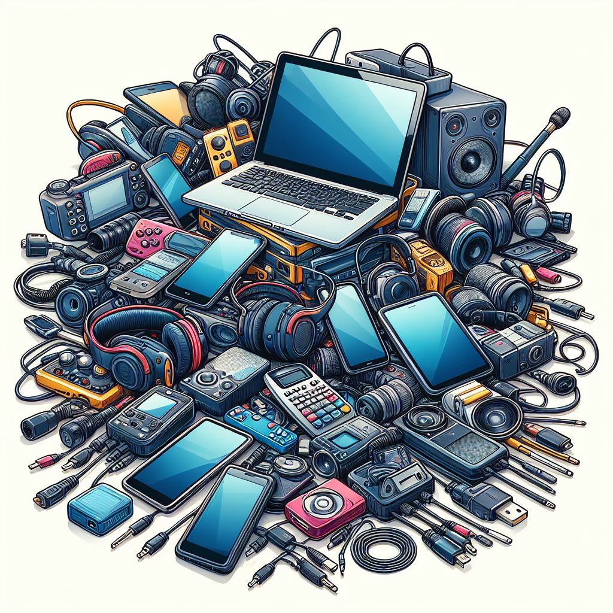
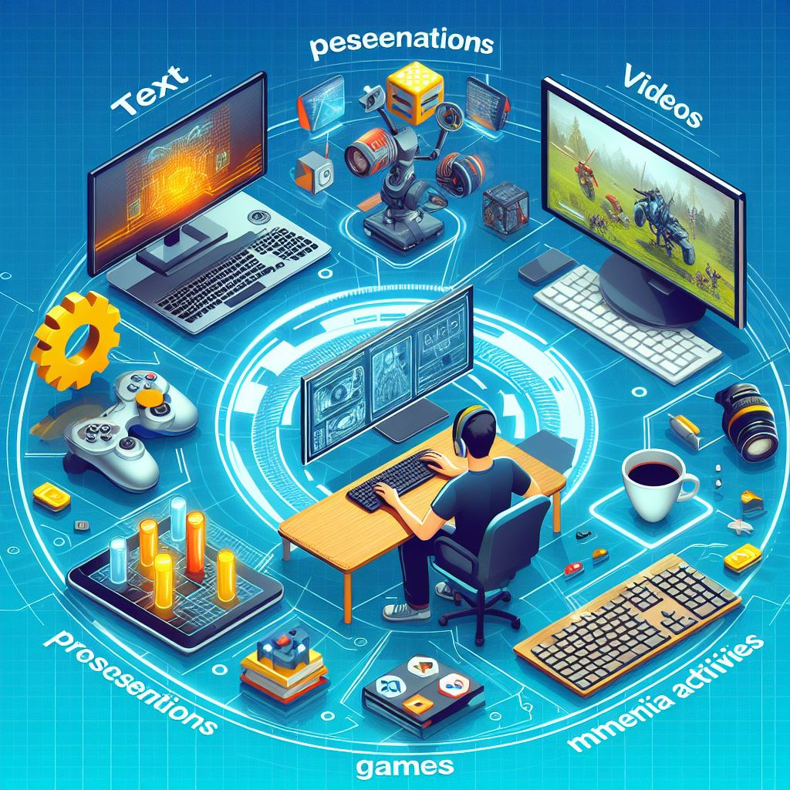

Existen diferentes tipos de recursos educativos que se pueden utilizar en las actividades educativas. Algunos de ellos son:
Recursos Didácticos
Son elementos materiales que sirven de auxiliares en el proceso de enseñanza, como lápices, marcadores o la pizarra

Materiales Didáctico
Materiales didácticos: Son elementos dispuestos pedagógicamente de antemano para facilitar el proceso de aprendizaje, es decir, a los recursos ex profeso para la enseñanza, como libros de texto, presentaciones audiovisuales, etc.

Software Educativo
Son programas informáticos que se utilizan para enseñar o aprender un tema específico. Pueden ser juegos educativos, simulaciones, programas de ejercicios, entre otros

Recursos Audiovisuales
Son recursos que utilizan imágenes y sonidos para enseñar un tema específico. Pueden ser videos, presentaciones, animaciones, entre otros.

Recursos En Línea
Son recursos que se encuentran en la web y que se pueden utilizar para enseñar o aprender un tema específico. Pueden ser páginas web, blogs, wikis, entre otros.
